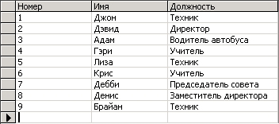
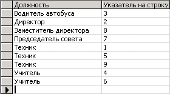
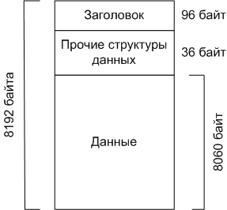
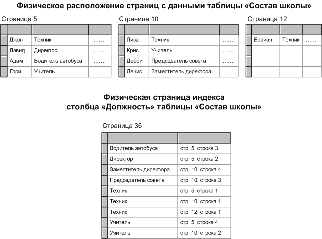
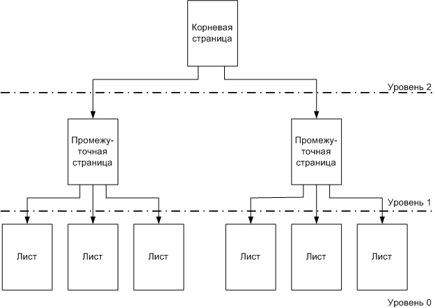
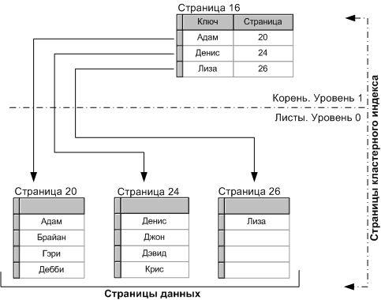
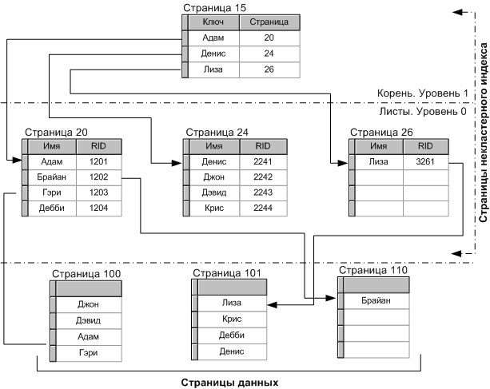

| Индекс раздела | Назад | Оглавление | Вперед |
Рассмотрим пример того, как индексы могут использоваться для ускорения выборки данных. На рис. 1 показанв таблица "Состав школы", содержащая имена и занимаемые должности всех работников школы:
|  |
| Рис.1. Таблица "Состав школы" |
Как поступить, если из этой таблицы необходимо выбрать имена всех работников, занимающих должность техника? Можно прочитать все строки данных таблицы и отобразить имена только тех работников, которые занимают должность техника. Процедура последовательного считывания всех строк таблицы в целях выполнения запроса называется сканированием таблицы. А теперь создадим индекс для столбца "Должность" таблицы "Состав щколы", или, другими словами, проиндексируем эту таблицу по столбцу "Должность". Результаты этой работы представлены на рис. 2:
|  |
| Рис.2. Индекс по столбцу "Должность" таблицы "Состав щколы" |
Показанный на рис. 2 индекс содержит указатель на данные. Воспользуемся этим индексом для выполнения того же запроса. Вместо полного сканирования таблицы "Состав щколы" считывается только первая строка индекса и проверяется должность. Если это не интересующее нас значение "Техник", считывается следующая строка, и так, пока не будет найдена первая строка с требуемым значением. Из найденной строки выбирается указатель на запись, представляющий собой точный последовательный номер соответствующей строки таблицы "Состав щколы". Чтение строк индекса продолжается до тех пор, пока в его строках будет содержаться требуемое значение "Техник", после чего обработка индекса прекращается.
Для понимания того, как подобный алгоритм поиска нужной строки помогает ускорить выполнение запроса, кратко рассмотрим физическую структуру хранимых данных MSSQL. В MSSQL данные и индексы таблиц хранятся в виде страниц, формат которых показан на рис. 3:
|  |
| Рис.3. Формат страницы данных SQL Server |
Каждая страница размером 8192 байт включает заголовок, имеющий длину 96 байт. Еще один фрагмент страницы используется для размещения других структур данных, например, информации о переполнении строк. Вся оставшаяся часть страницы (8060 байт) предназначена для размещения данных (т.е. информации таблицы или индекса).
Предположим, что таблица "Состав щколы" содержит и другую информацию, например домашний адрес работника, номер телефона и т.д. Размер одной строки данных таблицы "Состав щколы" в этом случае может составлять приблизительно 2000 байт, тогда как ширина столбца "Должность" составляет 25 байт. Учитывая приведенные значения, разместим показанную на рис. 1 таблицу и показанный на рис. 2 индекс на страницах SQL Server, формат которых представлен на рис. 3. Данное размещение показано на рис. 4:
|  |
| Рис.4. Страницы данных таблицы "Состав школы" и ее индекса в базе данных SQL Server |
Исходя из представленной на рис. 4 схемы рассмотрим, как в SQL Server будет выполняться поиск (без использования индекса) всех работников школы, занимающих должность "Заместитель директора". Прежде всего, будет считана страница с номером пять и ее данные будут просмотрены в поисках записей о нужных работниках. На первой странице (номер пять) такие записи найдены не будут. SQL Server считает следующую страницу (номер десять), просмотрит ее содержимое и выведет информацию из четвертой записи. Поскольку системе неизвестно, в скольких записях столбца "Должность" таблицы содержится значение "Заместитель директора", будет считана и просмотрена еще одна , последняя, страница таблицы с номером двенадцать. Итак, SQL Server выполнил полное сканирование таблицы, прочитав все записи с ее данными - в этом примере считывается всего три страницы данных. Ну, а если бы таблица "Состав школы" содержала бы в тысячу раз больше записей - около 9000 (что совсем не много для SQL Server)? Тогда для выборки необходимых данных пришлось бы считать 3000 страниц, причем даже в том случае, если бы в ней существовала только одна удовлетворяющая условию запись.
Рассмотрим, как будет выполняться тот же запрос с использованием индекса. Прежде всего, SQL Server считает страницу с данными индекса и промотрит ее содержимое в поисках значения "Заместитель директора". Искомое значение содержится в третьей строке. Из этой строки выбирается значение указателя, показывающее, что соответствующая запись является четвертой на странице номер десять. SQL Server считывает десятую страницу, выбирает четвертую строку и отображает найденное значение имени. Номер строки на странице сокращенно обозначается RID (Row Identifier). Затем проверяется значение в следующей строке индекса. Поскольку значение в ней отличается от искомого, SQL Server заканчивает обработку запроса. Таким образом, в данном случае для выполнения запроса потребовалось считать только две страницы, а не три, как в случае сканирования таблицы.
А что можно сказать о выполнении обсуждавшегося выше запроса об именах техников? Сканирование таблицы предусматривает чтение всех трех страниц данных. Использование же индекса потребует от SQL Server считать все три страницы данных, плюс еще одну страницу индекса. В итоге считанных страниц получится даже больше, чем при обычном сканировании! В некоторых случаях сканирование таблицы может оказаться эффективнее по сравнению с примененим для поиска индекса. Принятие решения о выборе используемого при поиске индекса или применении метода сканирования в SQL Server возлагается на службу оптимимзации запросов.
Для представления индексов в SQL Server используется схема двоичного дерева, показанная на рис. 5. Двоичные деревья представляют собой многоуровневые динамические поддерживаемые структуры.
|  |
| Рис.5. Схема построения двоичного дерева |
Двоичное дерево состоит из верхнего уровня, называемого корнем, нижнего уровня, называемого листами (это всегда уровень 0), и несколько (от 0 до N) промежуточных уровней. Дерево на рис. 5 включает один промежуточный уровень. В терминах SQL Server каждый из прямоугольников на рис. 5 отображает страницу индекса (или страницу данных). Чем больше уровней используется для представления индекса, тем больше страниц индекса потребуется считать для получения доступа к искомым записям данных (т.е с увеличением числа уровней производительность обработки индекса уменьшается). В SQL Server поддерживается два различных типа индексов - кластерные и некластерные.
Кластерный индекс представляет собой двоичное дерево, в котором на нулевом уровне (уровне листов) содержатся страницы актуальных данных таблицы, а физически информация хранится в логическом порядке данного индекса.
При создании кластерного индекса резко возрастает количество дисковых операций ввода-вывода, связанное с переупорядочиванием страниц данных, созданием страниц индекса и удалением освободившихся страниц данных таблицы.
На рис. 6 показан пример кластерного индекса, созданного для столбца "Имя" таблицы "Состав школы". Обратите внимание, что страницы данных являются листовыми страницами этого кластерного индекса, а информация на страницах данных логически упорядочена.
|  |
| Рис.6. Кластерный индекс для столбца "Имя" таблицы "Состав школы" |
Поскольку записи на страницах данных физически располагаются в требуемом порядке, для каждой таблицы может существовать только один кластерный индекс.
В SQL Server страницы индексов состоят из заголовка страницы, после которого располагаются собственно строки индекса. Строки индекса состоят из ключевого значения и указателя на страницу индекса или строку данных таблицы (листовой уровень кластерного индекса). Страницы индекса последовательно связываются друг с другом с помощью двунаправленных ссылок.
В случае некластерных индексов страницы листового уровня содержат не актуальные данные таблицы (как в случае кластерного индекса), а указатель на строку данных, включающий номер страницы данных и порядковый номер записи на странице. Некластерный индекс не требует физического переупорядочивания строк данных таблицы.
На рис. 7 показан пример некластерного индекса для столбца "Имя" таблицы "Состав школы":
|  |
| Рис.7. Некластерный индекс для столбца "Имя" таблицы "Состав школы" |
Обратите внимание, что некластерные индексы всегда имеют на один уровень больше кластерных, поэтому после достижения уровня листов дополнительно потребуется выполнить чтение страницы данных. Если таблица имеет кластерный индекс, указатели строк некластерных индексов будут ссылаться на уровень листов кластерного индекса. Если таблица не имеет кластерного индекса, указатель строк представляет собой RID, создаваемый на основе идентификатора файла, номера страницы и номера записи на странице.
Выбор используемых индексов определяется структурой таблиц и типом запросов, с помощью которых будет выполняться поиск данных в этих таблицах . Прежде счем приступать к созданию индексов, надо убедиться, что индексируемые столбцы входят в критерии поиска запросов или помещаются в таблицы по каким-либо другим соображениям, например для предотвращения дублирования данных. В последующих разделах обсуждаются некоторые аспекты стратегии использования индексов.
Ниже приведено несколько критериев, которыми можно руководствоваться при определении, какие именно столбцы таблицы следует индексировать:
Ниже приведены случаи, когда индексацию не следует использовать вовсе или использовать в крайне ограниченных масштабах:
Как уже упоминалось, для каждой таблицы может существовать только один кластерный индекс. Ниже перечислены случаи, в которых применять кластерные индексы целесообразно:
Некластерные индексы целесообразно применять в ситуациях, перечисленных ниже:
| Индекс раздела | Назад | Оглавление | Вперед |